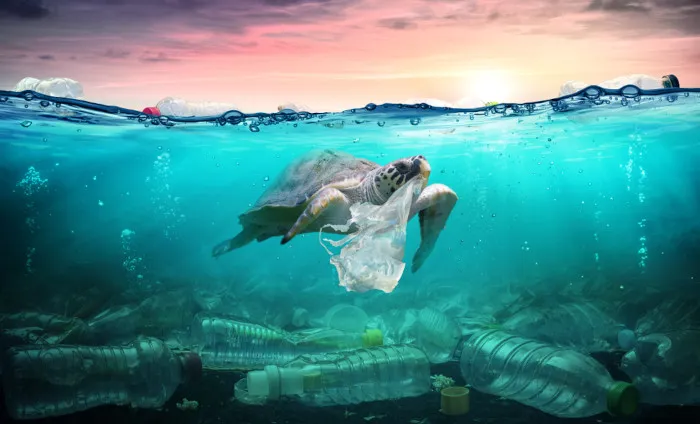
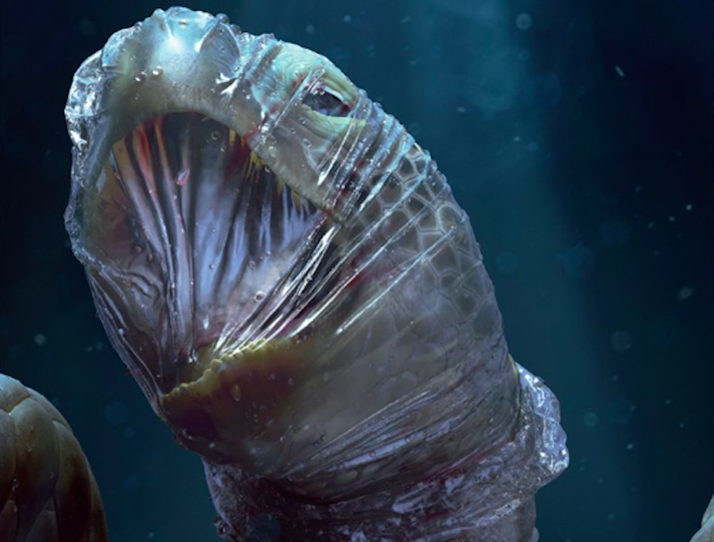
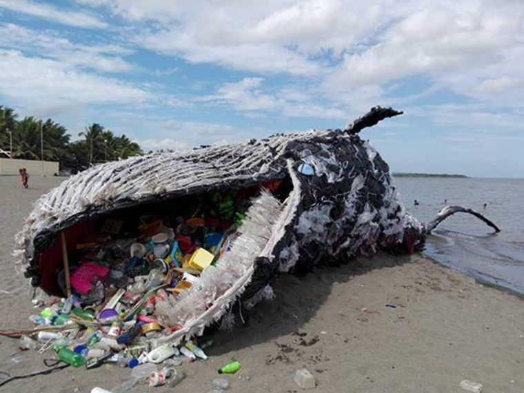
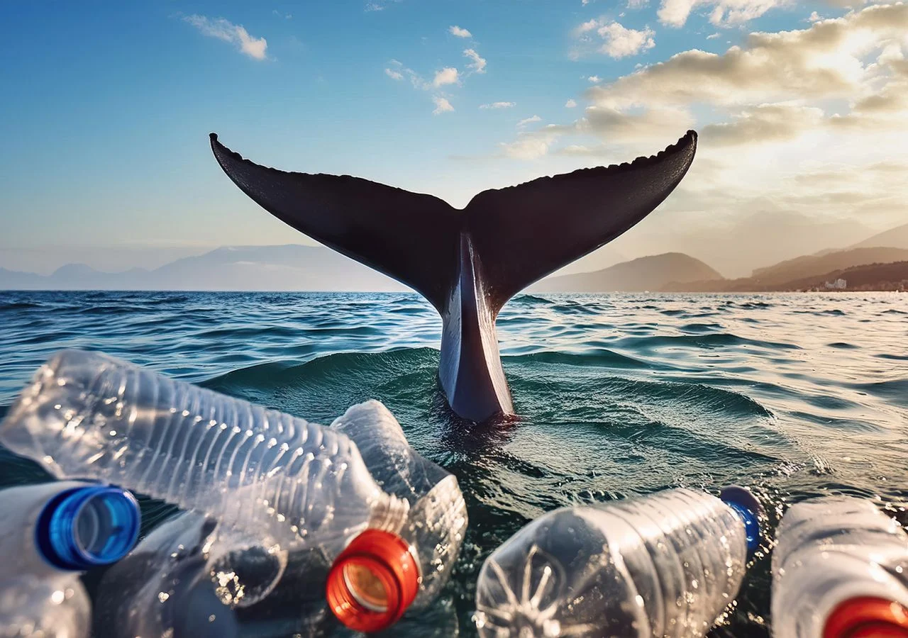
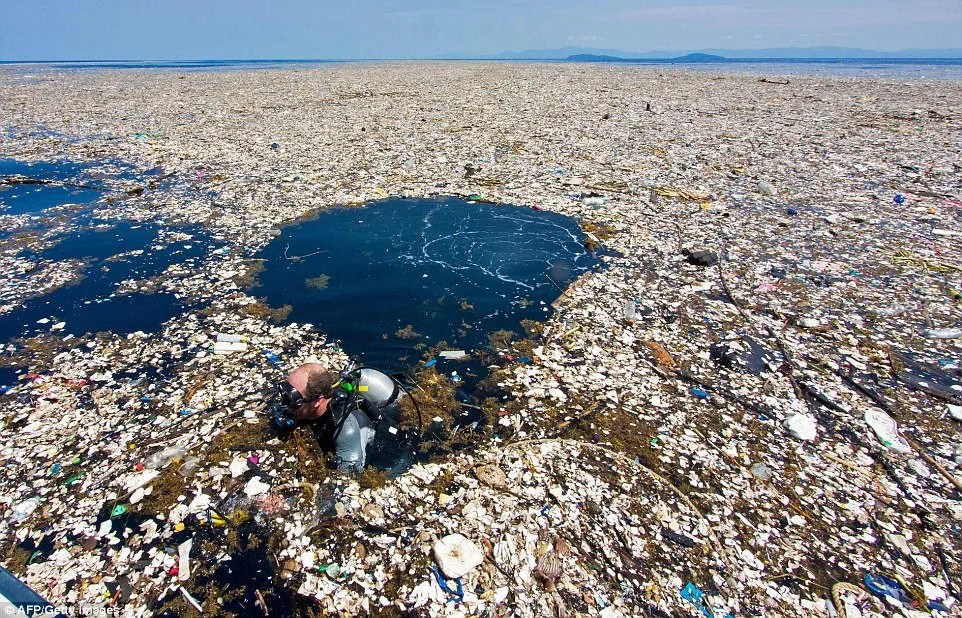
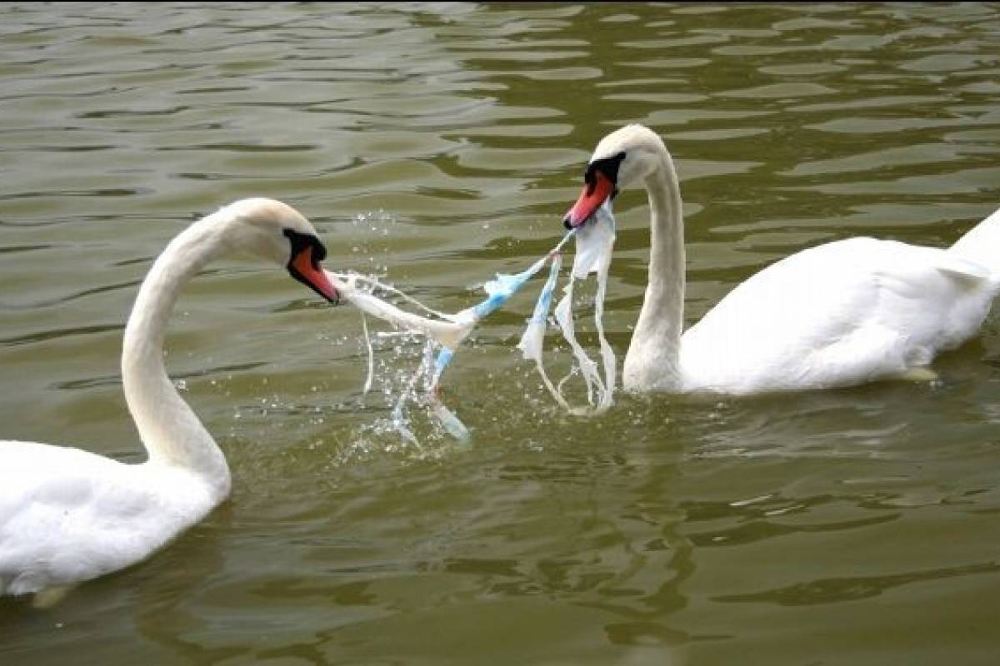

Em 2018, cientistas da Universidade de Exeter, em parceria com o Greenpeace, analisaram tartarugas marinhas dos oceanos Atlântico, Pacífico e Mediterrâneo. De 102 tartarugas examinadas, 100 tinham fragmentos plásticos no corpo, principalmente fibras vindas de roupas, pneus, filtros de cigarro e materiais de pesca.
Ao serem descartados na natureza, os plásticos se quebram em pedaços cada vez menores, chamados de microplásticos ou nanoplásticos. Essas partículas, além de prejudicarem a fauna marinha, também foram encontradas no pulmão humano, indicando os riscos da poluição para a nossa saúde.
Mais de 800 espécies, incluindo mamíferos, aves marinhas, peixes e tartarugas, foram severamente afetadas pelo enredamento em redes ou pela ingestão de plástico. Estima-se que 90% das aves marinhas e tartarugas tenham ingerido plástico, e 17% das espécies afetadas por esses detritos são classificadas como vulneráveis ou ameaçadas pela União Internacional para a Conservação da Natureza (IUCN).

Fonte: Mundo Educação

Fonte: Conexão Planeta
Cerca de 100 mil animais marinhos morrem anualmente devido à ingestão ou emaranhamento em plástico no oceano.
Pesquisas científicas identificaram 1.806 partículas suspeitas em 180 de 182 amostras de peixes e frutos do mar. Entre os plásticos encontrados, as fibras foram predominantes, seguidas por fragmentos e pedaços de CDs.
Casos de animais mortos com grandes quantidades de plástico no estômago se tornam cada vez mais comuns. Em março, uma baleia foi encontrada morta na costa das Filipinas, vítima de um choque gástrico causado pela ingestão excessiva de lixo plástico.
Na Indonésia, outro caso ocorreu em novembro do ano anterior: uma baleia morta foi encontrada com mais de mil objetos plásticos no estômago, totalizando cerca de seis quilos, incluindo garrafas, sandálias, cordas, redes de pesca e 115 copos plásticos.
As baleias-jubarte, por exemplo, são uma das espécies mais afetadas. Elas podem atingir até 18 metros de comprimento e pesar cerca de 30 toneladas. Utilizam sons para se orientar e localizar suas presas no fundo do mar, por meio de um sonar natural. Esse som emitido bate nos objetos e retorna, permitindo que localizem suas presas. Infelizmente, elas acabam confundindo objetos plásticos com alimentos, acumulando plástico no estômago, o que bloqueia o sistema digestivo e leva à morte por fome.
Outro risco grave vem da poluição química. Vazamentos de petróleo e o descarte indevido de substâncias tóxicas afetam diretamente as baleias-jubarte. O contato com petróleo compromete o sistema reprodutivo, reduzindo a taxa de natalidade e prejudicando o sistema digestivo e respiratório. Ao subir para respirar, o petróleo se acumula no espiráculo (buraco respiratório) das baleias, dificultando a respiração e afetando sua capacidade de navegação e caça.

Fonte: Google Images

Fonte: Tempo.pt
Entre dezembro de 2022 e março de 2023, várias espécies de baleias, incluindo dez jubartes, encalharam na praia entre Nova York e a Carolina do Norte. Foi o maior número de mortes de baleias registrado nesse período. Embora a causa dessas mortes ainda esteja sendo investigada, o mesmo ocorreu naquela região no inverno de 2016-2017, e o número de navios cargueiros no Oceano Atlântico está aumentando rapidamente (National Geographic).
Como a maioria da vida marinha, as baleias são impactadas negativamente pela poluição, pelo tráfego de barcos, pela acidificação e pelo aumento da temperatura dos oceanos. Pelo menos 70 baleias morrem a cada ano por causas humanas, incluindo a caça às baleias, que ocorre em algumas partes do mundo, como Noruega e Japão (Scientific American), e o número de mortes de baleias está aumentando. Desde a década de 1970, um número crescente de baleias tem sido morto por plástico.
As aves marinhas são aves que vivem principalmente no oceano. A maioria das aves marinhas passa o resto da vida em mar aberto, longe dos humanos. Para sobreviver lá, as aves marinhas têm muitas adaptações únicas. Duas adaptações interessantes que as aves marinhas geralmente têm são penas especializadas e um sistema de dessalinização. A dessalinização é o processo de remoção do sal (salina) da água. O sistema de dessalinização de uma ave marinha permite que elas bebam água do mar com segurança, transformando-a em água doce. As aves marinhas têm penas impermeáveis. Essas penas ajudam na flutuabilidade e adicionam isolamento extra para mantê-las aquecidas.
Cada pedaço de plástico já feito ainda existe. Na primeira década deste século, mais plástico foi feito do que jamais existiu antes de 2000. Estima-se que 15-51 trilhões de pedaços de plástico estejam nos oceanos . O plástico é encontrado em ilhas remotas e no meio do oceano, a milhares de quilômetros de distância da terra.
No Pacífico norte, há um lugar chamado Grande Mancha de Lixo do Pacífico. É duas vezes o tamanho do Texas. Mesmo sendo enorme, você não pode vê-lo de satélites. Isso ocorre porque é feito principalmente de microplásticos.
A cada ano, centenas de milhares de aves marinhas ingerem plástico. Estima-se que um milhão de aves morrem em decorrência do plástico a cada ano. Este problema cresceu explosivamente. Na década de 1960, menos de 5% das aves foram encontradas com plástico em seus estômagos . Vinte anos depois, mais de 80% das aves tinham plástico em seus estômagos. Projeta-se que até 2035, 99% das espécies de aves marinhas estarão ingerindo plástico.

Fonte: Ciclo Orgânico

Fonte: Route Institute
As aves marinhas confundem detritos de plástico com presas. Algumas aves, como o albatroz, comem ovos de peixe que são colocados em detritos flutuantes. Quando o albatroz come os ovos, ele também consome plástico. Aves marinhas que se alimentam na superfície são mais propensas a ingerir plástico. No entanto, aves marinhas mergulhadoras, como os papagaios-do-mar, também foram encontradas com plástico no estômago.
Após a ingestão de plástico, as aves marinhas também podem apresentar outros problemas de saúde. A presença de plástico afeta a função renal das aves. Isso pode causar maiores concentrações de ácido úrico, além de afetar negativamente o colesterol e as enzimas.
Além disso, a ingestão de plástico não é um problema exclusivo das aves marinhas. Outros animais marinhos, como tartarugas, peixes e mamíferos, também são afetados pela poluição plástica. A ingestão de microplásticos, em particular, é um problema crescente, pois esses pequenos fragmentos de plástico podem ser facilmente ingeridos por uma ampla variedade de espécies.
Portanto, é fundamental que tom emos medidas para reduzir a quantidade de plástico que entra nos oceanos e na cadeia alimentar.
| *-*-*-*-*-*-*-*-*-*-*-*-*-*-*-*-*-*-*-*-*-*-*-*-*-*-*-*-*-*-*-*-*-*-*-*-*-*-*-*-*-*-*-*-*-*-*-* |
|---|
| 1. Reduzir o uso de plásticos descartáveis (sacolas, canudos, garrafas). |
| 2. Aumentar a reciclagem e o reaproveitamento de plásticos. |
| 3. Promover campanhas de limpeza de praias e rios regularmente. |
| 4. Desenvolver e usar materiais biodegrádaveis em vez de plástico comum. |
| 5. Criar leis mais rígidas contra o descarte de lixo nos oceanos. |
| 6. Implantar sistemas de coleta de lixo em rios antes que cheguem ao mar. |
| 7. Apoiar projetos de tecnologia para remoção de plásticos do oceano. |
| 8. Responsabilizar empresas produtoras de plástico pelo destino de seus produtos. |
3 - Perigos do plástico para os animais
Lixo jogado no mar mata um animal a cada três dias no Brasil